Dongyang Jin 金冬阳
📧 12332451@mail.sustech.edu.cn · 💬 WeChat: jdyjjj0624
About Me
I am a researcher at the Department of Computer Science and Engineering, Southern University of Science and Technology (SUSTech), working under the supervision of Prof. Shiqi Yu. My research spans AIGC, image & video generation, computer vision, and biometrics. I am particularly interested in visual autoregressive generation, gait recognition, and controllable generative models.
Research Interests
News
- 2026.06 🚀 Continue working for SI Team, Xiaohongshu as Algorithm Engineer.
- 2026.03 🚀 Joined SI Team, Xiaohongshu as Research Intern.
- 2026.02 🎉🎉 Two papers are accepted by CVPR 2026.
- 2025.11 🎉🎉 One paper is accepted by AAAI 2026.
- 2025.11 🏆 Awarded the National Scholarship (国家奖学金).
- 2025.06 🎉🎉 One paper is accepted by TPAMI.
- 2025.06 🎉🎉 One paper is accepted by MICCAI 2025.
- 2025.04 🚀 Joined DreamX Team, AMAP, Alibaba Group as Research Intern.
- 2025.03 🎉🎉 One paper is accepted by CVPR 2025.
- 2025.01 🚀 Joined YouTu Lab, Tencent as Research Intern.
- 2024.12 🎉🎉 One paper is accepted by AAAI 2025.
- 2023.12 🎉🎉 One paper is accepted by AAAI 2024.
Education
-
M.Eng. in Computer Science and EngineeringSouthern University of Science and Technology (SUSTech)Sep 2023 – Jul 2026
-
B.Eng. in Computer Science and EngineeringSouthern University of Science and Technology (SUSTech)Sep 2019 – Jul 2023
Experience
-
 Research Intern & Algorithm Engineer · SI TeamXiaohongshu, BeijingMar 2026 – Present
Research Intern & Algorithm Engineer · SI TeamXiaohongshu, BeijingMar 2026 – Present -
Research Intern · DreamX TeamAMAP, Alibaba Group, BeijingApr 2025 – Feb 2026
-
Research Intern · YouTu LabTencent, ShanghaiJan 2025 – Mar 2025
Publications
* Equal contribution · † Corresponding author · CCF A CCF B CCF C Preprint · Total citations: 317
-
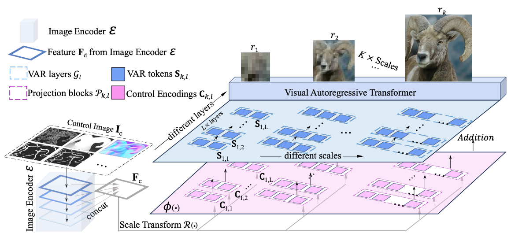
SCALAR++: Efficient Controllable Generation via Scale-wise Visual Autoregressive Learning -
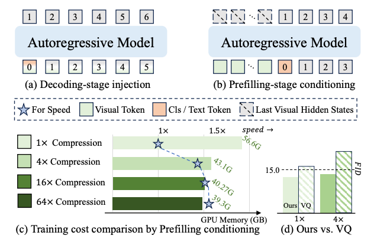
Semantic Context Matters: Improving Conditioning for Autoregressive Models -
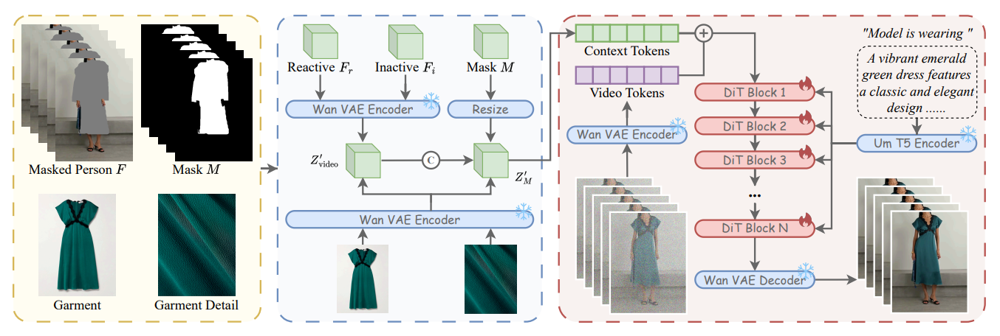
Eevee: Towards Close-up High-Resolution Video-based Virtual Try-on -
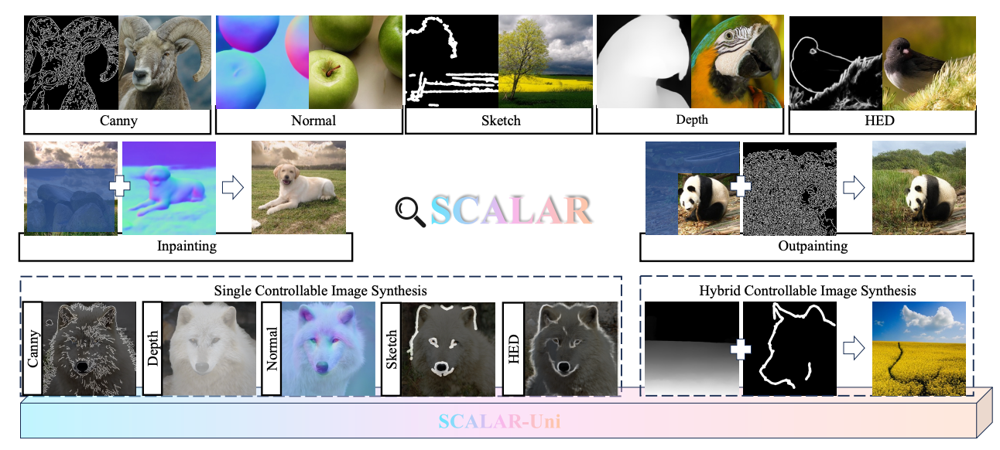
SCALAR: Scale-wise Controllable Visual Autoregressive Learning -
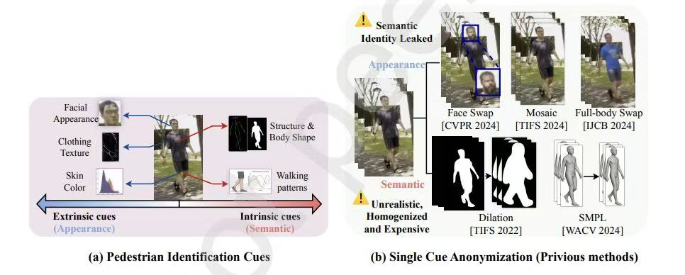
SAFE: A Semantic-Appearance Full-Body Editor for Pedestrian Video Anonymization -
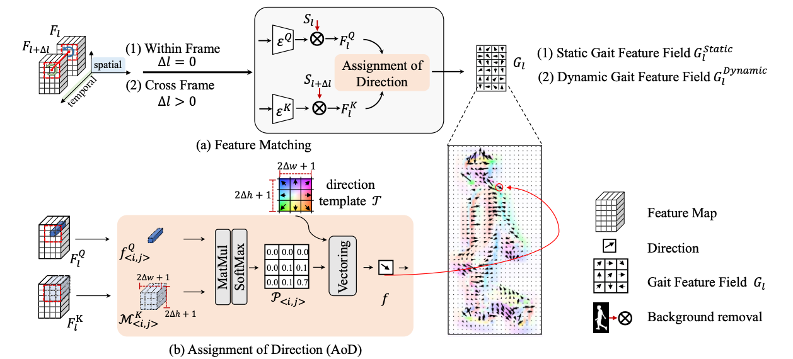
On Denoising Walking Videos for Gait Recognition -
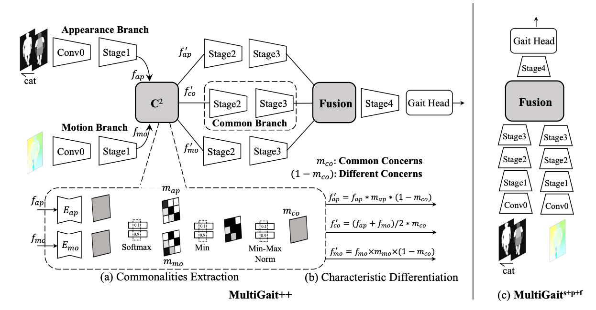
Exploring More from Multiple Gait Modalities for Human Identification -
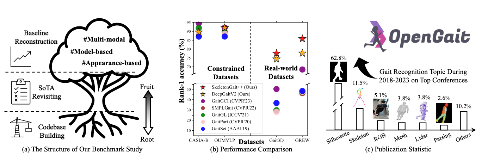
OpenGait: A Comprehensive Benchmark Study for Gait Recognition towards Better Practicality -
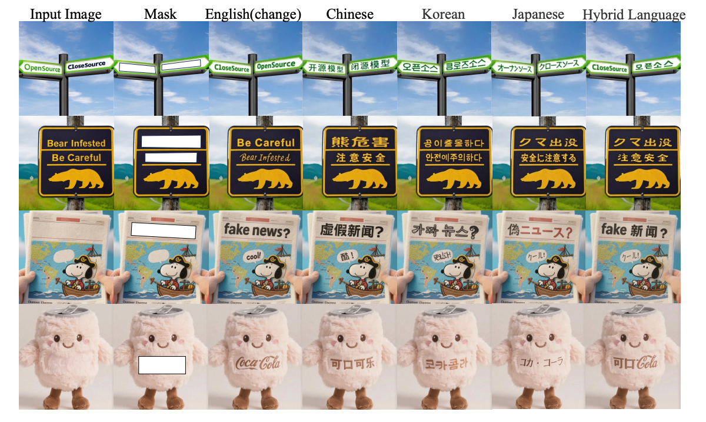
Flux-text: A Simple and Advanced Diffusion Transformer Baseline for Scene Text Editing -
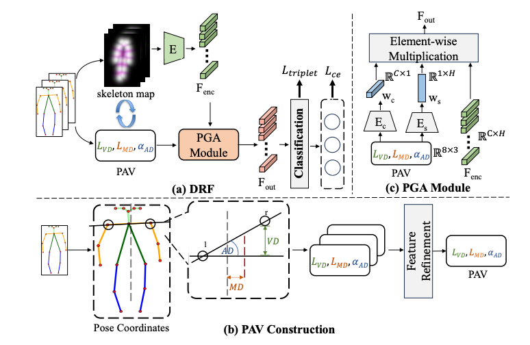
Pose as Clinical Prior: Learning Dual Representations for Scoliosis Screening -
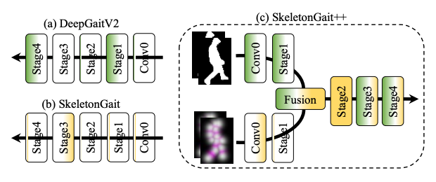
SkeletonGait: Gait Recognition using Skeleton Maps -
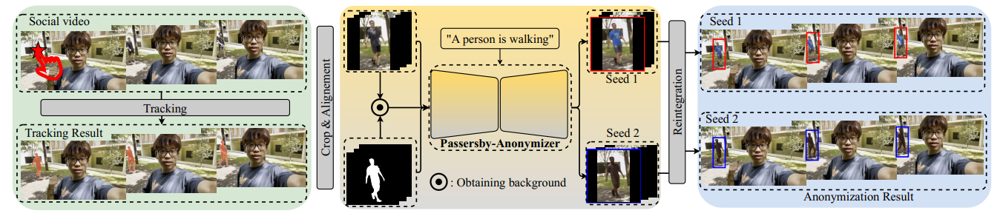
Passersby-Anonymizer: Safeguard the Privacy of Passersby in Social Videos
Services
• Teaching Assistant
-
Python ProgrammingSouthern University of Science and Technology (SUSTech)Feb 2023 – Jun 2024
-
Software EngineeringSouthern University of Science and Technology (SUSTech)Sep 2022 – Feb 2023
• Conference Reviewer
CVPR · ECCV · ACM MM
Honors & Awards
- Nov 2025 National Scholarship（国家奖学金）